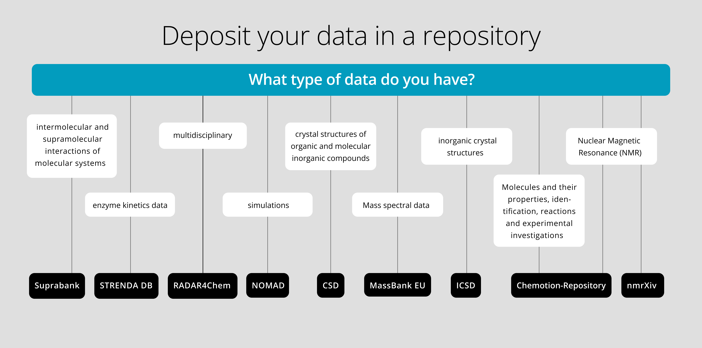

The NFDI4Chem Federation of Repositories & Search Service#
About this recipe
Author: Johannes Hunold, Christian Bonatto Minella
Reviewer: Stuart Chalk
Function: Overview of the NFDI4Chem federation of repositories and search services
Format: Markdown
Publications: https://www.nfdi4chem.de/publications/
Website: https://nfdi4chem.de
GitHub Repository: NFDI4Chem
Citations: ‘Federation of Repositories & Search Service’, Johannes Hunold and Christian Bonatto Minella, IUPAC FAIR Chemistry Cookbook, https://w3id.org/ifcc/IFCC020
Reuse: This resource is made available under a CC-BY-4.0 license.
About NFDI4Chem#
NFDI4Chem is the Chemistry Consortium in the National Research Data Infrastructure for Germany NFDI (German: Nationale ForschungsDatenInfrastruktur), a project launched in 2018 and funded by the German government to build a national research data infrastructure in Germany for a wide range of scientific disciplines. The vision of NFDI4Chem is to digitize all key steps in chemical research to support scientists in their efforts to collect, store, process, analyze, publish, and reuse research data. Actions to promote open science and research data management (RDM) in line with the FAIR data principles are fundamental objectives of NFDI4Chem to provide the chemistry community with a holistic approach to research data access. To this end, the overall goal is to develop and maintain innovative and user-friendly services and novel scientific approaches based on the reuse of research data. NFDI4Chem aims to represent all disciplines of chemistry in academia and therefore works closely with thematically related NFDI consortia.
NFDI4Chem Repositories & Search Service#
Figure 1 displays the repositories chosen by NFDI4Chem as the foundation of its federation due to their potential for development.
{kind=link}

Chemotion Repository: Field-specific sample and reaction-centric repository including analysis data such as NMR, IR, and mass data.
RADAR4Chem: Multidisciplinary repository that offers a free and reliable home for all chemical research data that do not fulfill the specifications of field-specific repositories.
nmrXiv: (pronounced nm-archive) is a FAIR and Open, Consensus-Driven Nuclear Magnetic Resonance (NMR) Data Repository and Computational platform.
MassBank EU: Field-specific ecosystem of databases and tools for mass spectrometry reference spectra.
STRENDA DB: Field-specific repository for enzymology data, which incorporates the STRENDA Guidelines for reporting enzymology data.
SUPRABANK: Field-specific repository for intermolecular interaction data.
ICSD: Field-specific repository for x-ray diffraction data of inorganic compounds, elements, minerals, and intermetallic compounds, operated by FIZ Karlsruhe.
CSD: Field-specific repository for x-ray diffraction data of molecules generally containing at least carbon and hydrogen, operated by the Cambridge Crystallographic Data Centre (CCDC).
NOMAD: Field-specific repository for materials science data.
Additional information regarding the aforementioned repositories can be found in the NFDI4Chem Knowledge Base. Furthermore, we recently conducted an analysis of chemistry data repositories in re3data to determine which open access repositories accept data from all scientists worldwide. Out of the 12 resulting repositories, seven are included in the NFDI4Chem federation.
The NFDI4Chem Search Service offers a comprehensive search across various chemical and chemistry-related repositories of the NFDI4Chem federation. The service collects metadata from all integrated repositories and provides a single point of entry for chemical dataset searches. For example, it allows users to search for all available data for a specific molecule in the federation. It revolutionizes the management of chemical research data by following the FAIR data principles, which promote Findability, Accessibility, Interoperability, and Reusability.
The integration of OAI-PMH and JSON-LD for metadata harvesting provides a standardized schema enriched with domain-specific metadata, such as chemical structure identifiers like InChI, InChIKey, and SMILES, in addition to standard generic metadata like title, author, and date. The molecule view facilitates the comparison of several datasets of individual molecules, promoting collaborative research in the chemical sciences. Original research datasets can be accessed through links in the connected repositories. The NFDI4Chem Search Service is built on the open-source data management software CKAN and is developed by the TIB - Leibniz Information Center for Science and Technology.